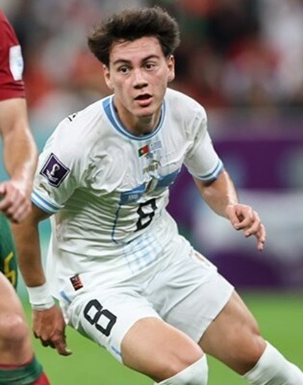

| Nombre | Posición | Edad | Biografía | Portada |
|---|---|---|---|---|
| Ronald Araujo | Defensa central | 25 |
Ronald Araujo, nacido en 1999, es un defensor central uruguayo que juega en el FC Barcelona. Reconocido por su fortaleza física y capacidad defensiva, es un titular clave en la selección nacional y uno de los pilares en la defensa de Uruguay. |
|
| Giorgian De Arrascaeta | Mediocampista ofensivo | 30 |
Giorgian De Arrascaeta, nacido en 1994, es un mediocampista ofensivo que destaca en Flamengo. Clave en el ataque uruguayo, aportó goles y asistencias decisivas en las eliminatorias rumbo al Mundial 2026. |
|
| Rodrigo Bentancur | Mediocampista defensivo | 27 |
Rodrigo Bentancur juega en Tottenham Hotspur y es pieza fundamental en el mediocampo de Uruguay. Destaca por su visión de juego y recuperación, aunque ha enfrentado polémicas que superó con profesionalismo. |
|
| Darwin Núñez | Delantero | 25 |
Darwin Núñez, delantero del Liverpool, es uno de los máximos goleadores actuales de Uruguay, reconocido por su potencia y definición precisa en el área. |
|
| Joaquín Piquerez | Lateral izquierdo | 26 |
Joaquín Piquerez juega en Palmeiras y ha vuelto recientemente a la selección después de 17 meses. Destaca por su rendimiento defensivo y apoyo al ataque por la banda izquierda. |
|
| Manuel Ugarte | Mediocampista defensivo | 23 |
Manuel Ugarte, fichado por Manchester United, es un mediocampista joven con gran capacidad de recuperación y gran despliegue físico, vital para la selección en el centro del campo. |
|
| Mathías Olivera | Lateral izquierdo | 26 |
Mathías Olivera, lateral del Napoli, aporta solidez defensiva y recorrido constante en la banda izquierda de Uruguay. |
|
| Nahitan Nández | Mediocampista defensivo | 27 |
Nahitan Nández, con experiencia en la Serie A italiana, es un mediocampista combativo que aporta fuerza y entrega en el mediocampo uruguayo. |
|
| Facundo Pellistri | Extremo derecho | 23 |
Facundo Pellistri, jugador del Manchester United, se destaca por su velocidad y habilidad en la banda derecha, siendo una joven promesa para Uruguay. |
 |
| Sebastián Coates | Defensa central | 34 |
Sebastián Coates, capitán y veterano defensa en Sporting CP, sigue siendo un referente en la zaga y líder dentro del plantel uruguayo. |
|
| Sergio Rochet | Arquero | 30 |
Sergio Rochet, portero del Inter de Porto Alegre, es el guardameta titular de Uruguay, aunque en 2025 ha enfrentado lesiones que limitaron su participación. |
|
| Federico Valverde | Mediocampista ofensivo | 27 |
Federico Valverde, mediocampista del Real Madrid, es un jugador clave para Uruguay aunque en 2025 enfrenta retos para adaptarse a nuevos sistemas tácticos. |